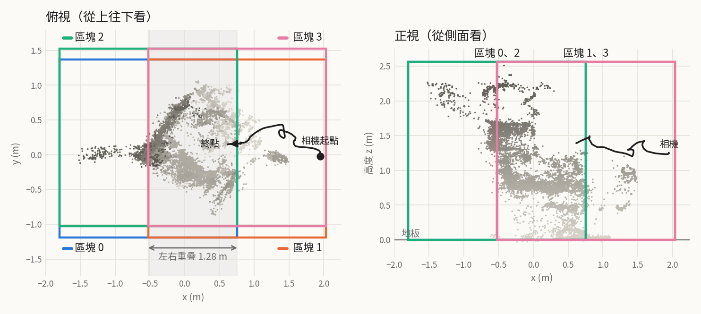
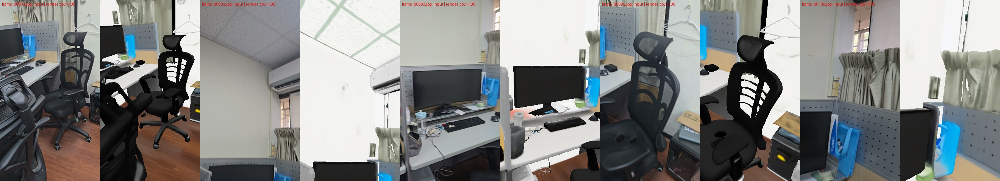

用手機影片重建 3D 場景
我用手機在實驗室錄了一段 13 秒的影片，丟進 GenRecon，重建出一個帶材質的 3D 場景。GenRecon 是 TUM 提出的多視角室內場景重建方法，所以沒拍清楚的地方也會被「補」出來
拖曳旋轉 · 點一下後可滾輪縮放 · 右鍵或雙指平移
載入模型中…
剖面高度會切掉該高度以上的部分，拉到最右邊會顯示天花板；地板網格每格 50 cm。畫面顯示的是模型輸出的表面顏色（base color 貼圖）。網頁版是簡化過的版本（約 127 萬面、2048 貼圖，18.6 MB），原始輸出是 900 萬面、4K PBR 貼圖的 GLB（366 MB）。
輸入影片
- 長度
- 13 秒
- 解析度
- 1080 × 1920（直拍）
- 器材
- 手機主鏡頭，手持
- 拍法
- 在桌角前左右來回走，中間往上掃到天花板、往下掃到地板
- 備註
- 網頁上的版本轉成 720p，並拿掉了聲音
做法
GenRecon 官方提供的是「已知相機位置的多視角影像 → 3D 場景」的推論程式，權重也是官方的。我自己補上「手機影片 → 官方輸入格式」這一段。
- 抽影格：用 ffmpeg 每秒抽 10 張，共 130 張。
- 估相機位置與相機參數：用 pycolmap（COLMAP 的 Python 版）做特徵匹配和 Structure-from-Motion。130 張裡有 126 張成功定位，重投影誤差 0.97 px，得到約 1.2 萬個 3D 點雲。輸出包含
- cameras.txt：相機內參
- images.txt：每張影格的相機位置
- points3D.txt：SfM 產生的稀疏點雲
- 對齊座標：GenRecon 假設 z 軸朝上、單位是公尺，但 SfM 的結果方向和尺度都是任意的。我用相機的「上」方向加上地板平面估出重力方向，用點雲的主成分決定水平方向，再假設天花板高 2.6 m 換算成公尺。
- GenRecon 重建：場景被切成 4 個邊長 2.56 m、互相重疊的立方區塊，每個區塊依序生成稀疏結構、幾何、材質（三個 flow model，各 12 步）。在 RTX 3090 上約 7 分鐘，顯存峰值 5.6 GB。
- 輸出：900 萬面的 PBR mesh，再烘焙成帶貼圖的 GLB。烘焙要在 CPU 上做 UV 展開，花了快 30 分鐘，比重建本身還久。


觀察
- 鍵盤按鍵、桌上小東西這類細節比較糊，受限於模型 512 的解析度。
- 拍得少的地方（天花板、拍攝範圍邊緣）是生成模型「補」出來的，有時會出現不存在的漂浮物。同一支影片重跑一次，結果也會有些不同。
- 只出現在畫面邊緣的隔壁座位，重建得比較隨意。